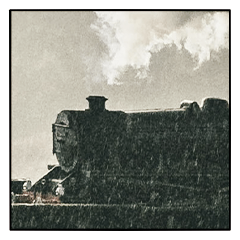
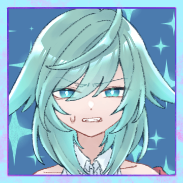
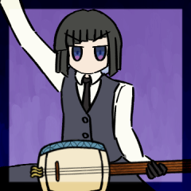

GM
シノビガミセッション『暴走！積尸気冥界車！！』始めてまいります。 GM
比良坂機関の科学者、ドクターMの手によって
作成された新型特殊車両『積尸気冥界車』。 GM
これは現世と特定の出島を安全に繋ぐ夢の汽車であった。 GM
忍の世界に革命をもたらす新技術に胸を熱くする忍達。 GM
だが、試験運転の日に列車は暴走。
進路を現世・東京に変えて、一目散に走りだす。 GM
このまま行けば多数の死者が出る。
忍は東京を守れるのか。 GM
では東京を守るシノビのみなさんに自己紹介をしてもらいましょうか。 GM
PC番号順でお願いします。GMが導入と使命を貼りますので、その後にキャラシートを公開し、自己紹介をしてください。 GM
PC1 推奨：比良坂機関
【導入】
総理直々の依頼により、あなたは積尸気冥界車に乗り込んだ。
護衛忍務、と聞いていたが、どうもキナ臭い。
そう思っていた矢先、積尸気冥界車は暴走を始めた。
【使命】
積尸気冥界車を止める。 癸 海鳴
https://character-sheets.appspot.com/shinobigami/edit.html?key=ahVzfmNoYXJhY3Rlci1zaGVldHMtbXByFwsSDUNoYXJhY3RlckRhdGEYh6iVsgUM 癸 海鳴
癸 海鳴（みずのと-うなり）です。癸でも、海鳴でも、お好きなように。 癸 海鳴
古くから比良坂の忍として、政に関わってきた家の者です。総理大臣より下った忍務、嬉しく反面、内心とても緊張しております。 [編集済] 癸 海鳴
表では『あの派遣の人必ず定時で帰るよね……』と言われがちなポジションの社員を演じ、様々な会社を渡り歩いております。 癸 海鳴
まあ、何者かを知られては忍務に差し障りますのでね。定時で帰るのも、そこで手に入れた情報を上に伝えるためですから。 癸 海鳴
……こんなところでよろしいでしょうか。何分こういう生業でずっと食ってきましたから。堅くてすみません。よろしくお願いいたします。 [編集済] GM
列車が東京に乗り入れると会社も破壊されちゃうかもですね。がんばってください。 癸 海鳴
それは…………是非とも、避けたいところです。 GM
PC2 推奨：隠忍の血統、ハグレモノ
【導入】
東雲八雲はあなたの友人（恋人、その他）である。
そんな彼女からの便りにはこう書かれていた。
『積尸気冥界車を止めて』
あなたは一肌脱ぐことにした。
【使命】
積尸気冥界車を止める。 白鬼
https://character-sheets.appspot.com/shinobigami/edit.html?key=ahVzfmNoYXJhY3Rlci1zaGVldHMtbXByFwsSDUNoYXJhY3RlckRhdGEYnsjztwUM 白鬼
私、名を白鬼と申します。ハクでもシラオニでもお好きな方でお呼びください。 白鬼
斜歯に実験用として送られた隠忍のシノビでございます。 白鬼
と言っても、今はそれほど縛られた生活はしておりません。 白鬼
被験体兼、助手兼、恋人…といったところでしょうか？ふふ…。 GM
使命はこちらも積尸気冥界車を止めること！ 止められるかな～！？ GM
PC3 推奨：斜歯忍軍
【導入】
完成を目前に何者かに邪魔をされ、奪われてしまった
斜歯特急『超絶護国地獄車（ハイパーガーディアンヘルライナー）』。
その研究員だった君に、比良坂の科学者が作ったという
『積尸気冥界車』の護衛依頼が舞い込んできた。
腹立たしい事態ではあるが、忍務であれば行かざるを得ない。
【使命】
斜歯の科学力が世界一であることを認めさせる。 テルル
https://character-sheets.appspot.com/shinobigami/edit.html?key=ahVzfmNoYXJhY3Rlci1zaGVldHMtbXByFwsSDUNoYXJhY3RlckRhdGEYrbP1twUM テルル
繰波良 輝々（クリハラ テルル）。気軽にテルル様と呼んでくれや。 テルル
一応、あんま行かなくていいタイプの高校生してる。
それ以外の時間は斜歯の研究室。 テルル
あの超絶護国地獄車（ハイパーガーディアンヘルライナー）も担当してた……のに、どいつか知らないが邪魔しやがって。
しかもパクリみてえな冥界車を比良坂の方が出してきやがって、まったく腹立つぜ。 テルル
フン、案の定想定外の事態が起こってるようでざまみろだ。
ここらでいっちょ活躍して、やっぱり斜歯が一番ってことをオレ様が見せてやんよ。 GM
斜歯の科学力を証明してください。パクリ列車を許すな！ ドクターM
■ドクターM 概要：比良坂機関の科学者。 ドクターM
【設定】
積尸気冥界車の開発者。
【使命】
積尸気冥界車を無事に完走させる。 ドクターM
布の下の差分は用意してないのでめくらないように。 
積尸気冥界車
■積尸気冥界車 概要：暴走する比良坂特急。 積尸気冥界車
【設定】
暴走する機関車。
どこへ向かおうと言うのか。
【使命】
完走する。 東雲八雲
【設定】
突如姿を消した斜歯の研究員。
中核を担う彼女がいなくなったことで、
超絶護国地獄車の研究はストップすることとなった。
※東雲八雲の秘密は、東雲八雲が登場していないと調べられない。
【使命】
積尸気冥界車を止める。 GM
導入に入りましょう。PC番号順にそれぞれの導入から、積尸気冥界車の発車シーンという流れになります。 GM
古くから政と関わってきた癸家、政府からの忍務を言い渡されることもあったでしょう。 GM
そして今回は、総理大臣直々のお呼び出しが下りました。 GM
首相官邸の一室にて、御園百合恵が重々しい雰囲気であなたの前に立っています。 [編集済] 癸 海鳴
表情を変えないようにしつつ、総理の前で彼女の言葉を待っています。 御園百合恵
「積尸気冥界車について……もうあなたも聞いてるかしら？」 癸 海鳴
「比良坂が作り上げし機関車……知らない機関の者はおりませんよ」 御園百合恵
「現世と出島をつなぐ夢の新技術……と言われているけれど」 御園百合恵
どうにもなんか……うーん……みたいな顔をしています。 GM
カメラが引きになって、視聴者に音声が聞こえない感じのシーンです。 [編集済] 癸 海鳴
何度も小さく頷いて、相槌を打っている、が…… 御園百合恵
「護衛忍務、ということで……任せていいかしら？」 癸 海鳴
静かな部屋で、妙に早くなる自身の鼓動だけが響いているように感じられる。 癸 海鳴
嘘や冗談を比良坂の忍に伝えるはずがない。 癸 海鳴
「は……はい……私に、お任せください……」 癸 海鳴
これがギャグ漫画だったら滝のように汗が流れてたところ。 癸 海鳴
正気かよ……と言いたいのを堪えています。 御園百合恵
「あまり多くの人員を動かすわけにもいかなくて……」 御園百合恵
「負担をかけてしまうけど、どうかよろしくお願いね」 癸 海鳴
「え、ええ……」そうなんだ……なら仕方ないな……（正当化） 癸 海鳴
「癸の者として、此度の忍務も必ずや成功してみせます」 癸 海鳴
「はい……」期待が……重く……のしかかる……！！ [編集済] 癸 海鳴
口ではそう答えながらも、総理の期待と信頼を無碍にできない己を呪っていた。 GM
シノビの世のことなど何も知らぬ人々が、今日も平穏な日々を送っている……。 GM
えーと 白鬼さんはいつもどこにいるのかな。八雲のラボとかかな。 GM
では、八雲のラボですね。
あまり大きくないです。寝泊まりするための簡易ベッドが持ち込まれているので、なおさら手狭です。 白鬼
床に散らばったゴミなどを片付けています。机の上はどれだけごちゃごちゃでも手は出しません。 東雲八雲
扉が開いて、東雲八雲が飛び込んできました。 白鬼
「…どうしたのですか、八雲。そんなに慌てて…」 白鬼
「落ち着いてください、八雲。私はここにいますから。」
そう言って八雲の背中を撫でます。 東雲八雲
そうしている内に、少し落ち着きを取り戻して。 白鬼
「なんでも言ってください、八雲。私は白鬼、あなたの白で、あなたのモノです。」 白鬼
「あなたの頼みならば、願いならば、全て聞き届けましょう。」 GM
あなたの手元にあるのは、彼女から届いた一通の手紙。 白鬼
まぶたの縫われた白鬼の代わりに、式神で作られた腕…その瞳の印がその文章を何度も読み返す。 白鬼
「…ええ、八雲。あなたの頼みならば、私は。」 白鬼
カラン、と下駄の音を響かせて…。白鬼は積尸気冥界車の中へと消えていった。 [編集済] GM
あなたは超絶護国地獄車の開発研究班に所属していますね。 GM
そしていつも通り研究室に出勤してくるとですね…… GM
なんか、研究員の下忍達がざわざわしています。 GM
「は、超絶護国地獄車が……」「我々の超絶護国地獄車が……」 GM
「何者かの手で」「奪われてしまいました……っ！！」 テルル
「オイ、ふざけんなよ！ あとちょっとで完成だろうが！！」 GM
「あんなに真面目に取り組んでた東雲研究員がそんな……」「でも一緒に消えるなんて怪しいぜ！」「いやでも……」 
テルル
「……いや、あの東雲がこんなに分かりやすい真似をするか……？」 GM
やったという証拠も、やっていないという証拠も、ここにはありません。 GM
ただ八雲と超絶護国地獄車が消えてしまった事実がある。 テルル
「くそ……おいお前ら！ 今すぐ犯人の痕跡を探せ！」 テルル
「セキュリティログの確認！ 指紋の有無！ 東雲のPCが残っているならそれも洗え！」 GM
しかしそうして痕跡を探した甲斐もなく、手がかりは得られず…… GM
超絶護国地獄車紛失の咎で、研究員たちにはその後強めの怒られが発生しました。 GM
怒られつつも、引き続き捜索を続けてしばらく日数が経ち…… GM
テルルさんにお呼び出しがかかります。呼び出したのは斜歯忍軍の頭領、黒潮一人です。 テルル
未だ捜索の成果が上がらないことに不機嫌になりながら召集に応じる。 黒潮一人
「捜索はまだ続けてもらうが、君には一旦外れてもらう」 黒潮一人
積尸気冥界車の護衛依頼のことを伝えます。 テルル
「おい！ オレ様たちのパクリじゃねえかそれ！！」 黒潮一人
伝える黒潮の側も、苦虫を噛み潰したような顔をしている。 テルル
「しかも護衛しろだァ……？ 舐めてんのかウチを」 テルル
「斜歯を舐めたことを後悔させてきてやりますよ」 GM
そうして発車した積尸気冥界車に、あなたたちは乗り合わせています。 [編集済] 癸 海鳴
出島に向かって、あっちの技術を持って帰れば比良坂、ひいては国の利益に繋がる。 癸 海鳴
出島へ行き来できるだけでも相当なアドバンテージにはなるでしょう。 テルル
それが比良坂の手柄になるの、気に食わねえ～……。 GM
比良坂の下忍たちが慌ただしく行き交っています。 白鬼
八雲の願いを叶えるのでしたら…すぐでも爆破などして止めるべきなのでしょうけども…。さすがに無謀ですものね。 [編集済] テルル
あいつら引き抜いて斜歯に持ってこれねえかな～……。 癸 海鳴
あくまでも護衛ですからね。私は有事に備えて邪魔にならないよう待機していましょう。 GM
ギャリリリリ！！！と車輪とレールの擦れる音。 テルル
やっぱこれうちの超絶護国地獄車と似てない？ パクリじゃない～？ GM
やたらと曲がりくねった線路に、列車が大きく揺れる。 テルル
なんかアトラクションみたいになってきたな。 GM
比良坂の下忍達に、ン？ン？という雰囲気が漂ってきています。 癸 海鳴
慌てて荷物――アタッシュケースのような楽器入れを手で押さえる。 テルル
比良坂のお堅い頭じゃ対応できないこともあるだろうからちょっと見てやるか。 白鬼
あら。あの方どこかで見たことがあるような…。
いえ、気のせいですね。 GM
「なんか……想定の10倍くらい出ちゃってて……」 テルル
「まあ目的地に早く着くんならいいんじゃないの……」 癸 海鳴
いかにも比良坂～って雰囲気の女が口を開く。 癸 海鳴
「比良坂はそこまで冒険するような流派ではないだろう」 GM
「そのはずなんですが……」首をひねっています。 テルル
「……。そういうのはご自分のとこのミスを確かめてから言ってくんねえかな」 GM
「ワーーッ」「そんなっ」「春日が死んだーー！！」 癸 海鳴
「……っ？！ どうした！ 一体何が起こっている！」 癸 海鳴
春日氏に黙祷を捧げ……あ、新たな被害者が。 テルル
「おい！ 下忍共は早く固まって陣を作れ！」 白鬼
「戦えるシノビはおらっしゃらないのですか？」 癸 海鳴
護衛で来たけど、彼らまで守るほど……余裕はないな。 テルル
「……お前、どっかで見た顔だと思ったら東雲のオンナだな」 白鬼
「…まあ、八雲のオンナだなんて。照れますね。」 テルル
「繰波良輝々（くりはらてるる）！ 超絶護国地獄車（ハイパーガーディアンヘルライナー）の研究員だよ！」 テルル
「オレ様のことを忘れるたァいい度胸じゃねえか……」 テルル
「超絶護国地獄車（ハイパーガーディアンヘルライナー）」 癸 海鳴
「超絶護国地獄車（ハイパーガーディアンヘルライナー）。はあ」 癸 海鳴
聞き慣れない横文字めいた名前を復唱して。 テルル
「言ってやりたいことはやまっほどあるが今はそんな場合じゃねえな」 癸 海鳴
「先程はうちの研究員が失礼いたしました」 [編集済] GM
「このままじゃ山手線に乗り入れちゃいます！！」 積尸気冥界車
まるで肯定するように列車が唸りを上げます。 テルル
「おいおいおい！ 環状線が焼け野原になるじゃねえか！」 癸 海鳴
なんでだよ……と言いたげな顔をしています。 テルル
「まあ我が家も環状線沿いだから家が更地になるかもしれねえな」 癸 海鳴
首相官邸が全焼する最悪の展開を考えています。 積尸気冥界車
列車はすごい勢いで進んでいます。大量の妖魔を引き連れて。 白鬼
「…東京に辿り着いてしまうまで、どのくらいの時間が残されていますか？」 GM
メインフェイズいっぱいくらいの時間が残ってます。 癸 海鳴
「……テルル様、と申しましたか。それと、そちらの角のお方」 癸 海鳴
「ありがとう。……では、テルル様と白鬼様」 癸 海鳴
「私は癸 海鳴。護衛として乗り合わせた比良坂の忍です」 癸 海鳴
「積尸気冥界車の既に死者まで出したこの惨状の中、大変厚かましいお願いではありますが」 癸 海鳴
「どうか、どうか……この機関車を、共に止めていただけないでしょうか」 テルル
「もちろん。ちょうど退屈してたとこだったんだよ」 白鬼
「元よりそのつもりでしたし…、おっと失礼」口元を抑える 癸 海鳴
「……有難きお言葉」顔を上げ、微笑んでみせる。 癸 海鳴
「ところで、言いたくないのであれば結構ですが」 癸 海鳴
「お二人共見たところ、比良坂では無さそうなのに、なぜこちらに……？」 テルル
「ん？ オレ様はお前と同じだよ。この列車の護衛忍務をボス直々に任された」 白鬼
「まあ、そうだったのですね。お疲れ様ですテルル様。」 癸 海鳴
「……？ なにか、この列車と似通った存在をご存知で……？」 [編集済] GM
なんもパクってないわ！言いがかりをつけるなー！と比良坂下忍たちから野次が飛んでいます。 テルル
「超絶護国地獄車（ハイパーガーディアンヘルライナー）と被らせてきたのはそっちじゃねえのか？ ああ？」 テルル
「……とまあそんな不満もあるが、今話してる場合じゃねえな」 白鬼
「あ、ちなみに私がこの場にいるのはたまたまです」 癸 海鳴
「本日超絶護国地獄車（ハイパーガーディアンヘルライナー）と耳にするまで全く、」 癸 海鳴
「まっっっっったく存じ上げませんでした」 テルル
「フン、あとできっちり聞かせてもらうからな」 GM
忍たちと大量の妖魔を引き連れて、列車は進んでゆく……。 GM
消えた超絶護国地獄車（ハイパーガーディアンヘルライナー）と東雲八雲の行方は！？ GM
メインフェイズに入っていきます。ドラマシーンをやる場合はDSTを振ってくださいね。 GM
エニグマはギザギザの車輪とまとわりつく死霊の二つです。 GM
今回は血盟忍法を可とします。皆さんお好きな血盟忍法を一つ取得してください。 癸 海鳴
登場者の指定はないので、出たい人は出てください！ GM
シーン表振ってから出るかどうか決めてもらって大丈夫です。 癸 海鳴
DST 出島シーン表(10) ＞ 地面を覆う無数の瓦礫。その隙間から暗黒の瘴気が立ち昇る。このシーンの登場人物は《生存術》で判定を行わなければならない。失敗すると、好きな【生命力】を１点失う。 癸 海鳴
2D6>=6 （判定：医術） (2D6>=6) ＞ 7[3,4] ＞ 7 ＞ 成功 GM
窓の隙間から暗黒の瘴気が入り込みましたが、なんとかなりました。 癸 海鳴
比良坂の研究員を襲った妖魔の排除、ないし妖魔が乗り込んだ原因の特定。 癸 海鳴
それから、山手線に……という、冗談みたいな事実への対処。 癸 海鳴
後者を優先することを選んだ。総理直々の依頼だもんね。 癸 海鳴
エニグマ：ギザギザの車輪を調査します。
国益の損失に関わることなので《経済力》で判定できますか？ 癸 海鳴
2D6>=5 （判定：経済力） (2D6>=5) ＞ 5[2,3] ＞ 5 ＞ 成功 GM
こちらは補助判定ですので、シーンプレイヤーの方はそれぞれの手番の行動とは別に判定に挑戦できます。 癸 海鳴
2D6>=6 （判定：死霊術） (2D6>=6) ＞ 7[3,4] ＞ 7 ＞ 成功 癸 海鳴
エイッとやって車輪からギザギザが取れました。 積尸気冥界車
揺れが少しマシになりました。車輪が丸くなったので。 癸 海鳴
ギザギザにしようとした奴絶対センス無いよ。 積尸気冥界車
スピードは相変わらずです。ギザギザの車輪で速度が出てたわけではないみたいですね。 癸 海鳴
結局東京に向かって突っ込んでるのには変わりないか…… 癸 海鳴
とりあえず、車輪に何かしらの細工？がされていたことは二人に伝えておこう。 積尸気冥界車
丸くなった車輪で、列車は東京を目指して進んでいく……。 テルル
DST 出島シーン表(8) ＞ 薄汚い路地裏。巨大な黒犬が何かを貪っている。あなたの気配を感じて黒犬は去るが、そこに遺されていたのは……。 GM
この肉はなんだろう？ それは犬には分かりません。 テルル
というわけで黒犬のちゃむちゃむを聞きながらこっそり二人のそばを離れます。 テルル
＊情報判定を行います。積尸気冥界車の【居所】を抜きます。 テルル
2D6>=5 （判定：隠形術） (2D6>=5) ＞ 8[2,6] ＞ 8 ＞ 成功 GM
成功ですね。テルルさんは積尸気冥界車の居所を獲得。 テルル
下忍や妖魔の波をすり抜けて、冥界車の核となる場所を探し出す。 テルル
ひとしきりエンジンにメンチ切ってから戻りました。
あんまり二人から離れていると怪しまれるかもしれないので。 白鬼
DST 出島シーン表(8) ＞ 薄汚い路地裏。巨大な黒犬が何かを貪っている。あなたの気配を感じて黒犬は去るが、そこに遺されていたのは……。 白鬼
というわけで、登場はして頂いて構いませんよ。自由です。 テルル
「野生で生きてりゃそうもなるか。今の状況ごちそうフィーバータイムかも」 癸 海鳴
「東京行きの進路をなんとかできないか、車輪を調査してみましたが」 癸 海鳴
「……酷い揺れが収まっただけで、結局行き先は変えられませんでした」 テルル
「こっちはまあ……列車にカチコミかける方法は分かったってとこ」 白鬼
「なるほど、確かに直接叩くのはありかもしれませんねぇ…」 テルル
「だろ？ どうしても止まんないときはマスターキーの出番ってわけよ」 癸 海鳴
「車両そのものが妖魔に操られている可能性も考えられます」 癸 海鳴
「やむを得ませんが、テルル様のご判断は正しいかと」 癸 海鳴
「……なるほどな」そうするしかないよね。 白鬼
「ええ、この列車を止めるのが目的ですし…。いざとなれば。」 癸 海鳴
「一人よりは複数の方が良いでしょう」協力してって言った身だしね。 GM
了解しました。積尸気冥界車の居所がお二人に共有されます。 癸 海鳴
「では、その時が来ればお供いたしましょう」 白鬼
「では、それまでは調査を続けていきましょうか」 白鬼
「まずは、そうですね…。列車周囲が騒がしいので、それをなんとかしたいですね」 白鬼
＊エニグマ：まとわりつく死霊を死霊術で調査します 白鬼
2D6>=5 （判定：死霊術） (2D6>=5) ＞ 8[2,6] ＞ 8 ＞ 成功 GM
■まとわりつく死霊：負の命
計画判定：封術 [編集済] テルル
うーんまあ 7 7かあ……それならなんとか……？ GM
すみません、シナリオシートのデータが間違ってたので修正しました。 癸 海鳴
うんうん。誰がやっても差はない……と思う。 GM
こちらは手番を使って判定に挑戦する必要があります。がんばってください。 白鬼
「えーっと…」
式神が懐から大量に飛び出てくる。 白鬼
それはの二本の腕の形を取り、片方は印を結び、片方は鈴を持っている。 白鬼
白鬼本人の腕は、袖に隠れたままだ。袖も縫われているし、手が出せない。 テルル
そういえば、あの目と袖……前はあんなんじゃなかったよな。 テルル
「……そうだな、なんのためにそうなった？」 白鬼
「いつまでも中忍という立場に収まってはいられませんから。力を得るために、代償を支払ったまでです。」 [編集済] テルル
「なるほどな。そりゃ確かに力をつけりゃ立場も上がる」 テルル
「立場が増えりゃできることも増えるし、こうして怪しい列車に乗りに来ても怒られない」 癸 海鳴
「……」訳ありみたいですが……なるほどなあ。 白鬼
式神の持っていた鈴が激しく揺れる。ちりちりちちりいいりん。 白鬼
「…ふむ。あの悪霊は、何かしらの結界…？いえ、封印が施されているのかもしれません。」 白鬼
「もう少し時間をかけて調べてみる必要が、ありそうですね」 [編集済] GM
放置してるとヤバいかも……という雰囲気を出しています。 テルル
「これもタスクに追加だな。こんなときにまだるっこしいが、対処しないと面倒なことになりそうだ」 GM
死霊は威嚇するようにぐるぐると列車の周りを回っている……。 癸 海鳴
「カチコミに、封印の解除。まあどちらも列車を止めるのに直接関わってきますが」 癸 海鳴
「次から次へと、やることが増えてしまいますね……」 癸 海鳴
素直に頭下げて正解だったかも知れません。 GM
了解しました。では1d100で高い方が初手で。 白鬼
1d100 おりゃー！ (1D100) ＞ 9 GM
戦場表を振らない場合戦場は極地になりますが、どうしますか？ テルル
エ……エ……！？ じ、じゃあ極地に……する……！？ 白鬼
そうですね、乱入判定先にできるならしたいです！ GM
どっちも戦闘開始時と書いてあるので、判定が先でもよさそうな気がしました。 GM
ということで、乱入希望の方は名のりを上げてください。 GM
RTT ランダム指定特技表(3,10) ＞ 『忍術』分身の術 GM
では、特殊な戦闘乱入となりますので、分身の術で判定をどうぞ。 癸 海鳴
2D6>=8 （判定：遊芸） (2D6>=8) ＞ 5[1,4] ＞ 5 ＞ 失敗 白鬼
2D6>=7 （判定：傀儡の術） (2D6>=7) ＞ 7[2,5] ＞ 7 ＞ 成功 GM
白鬼さんは乱入に成功。3人参加で3Rですね。 白鬼
ラウンド終了時にやばいことが起こるかもしれないですけど、いいところだと思うんです テルル
今シナリオの「協力型」の文字をじっと見つめています テルル
じゃあ……せっかくの仲間のリクエストに応えようカナ！？ 癸 海鳴
じゃ、死角から妖魔が襲いかかってこないか見張ってますね。頑張って！ GM
https://character-sheets.appspot.com/shinobigami/edit.html?key=ahVzfmNoYXJhY3Rlci1zaGVldHMtbXByFwsSDUNoYXJhY3RlckRhdGEYo7zAsQUM 癸 海鳴
おかしい……無機物は繁殖しないはずでは…… 積尸気冥界車
積尸気冥界車の心臓部にやってきた忍たち。 積尸気冥界車
それを機械アーム、機械触手などが迎え撃ちます。 積尸気冥界車
信じられないことに接近戦攻撃の指定特技が決まってなかったので、ダイスで決めました。 白鬼
(プロット読めれば苦労しないのがシノビガミ) テルル
「頼みがある。悪ぃようにはしねえから、エンジンに辿り着いたらすこぅしだけ目ぇ瞑っててくれないか」 テルル
「ちょっとまあ……やんなきゃいけないことがあんだよ」 テルル
システム的には勝者になって戦果がほし～いという話ですね。 白鬼
「いえ、おそらくそうなのでは…と。何か事情がおありなのだろうと、思ってはおりました。」 白鬼
「そのように、真っ直ぐにお願いをして頂いたことに免じて…私も本音を話させて頂きますね。」 白鬼
「申し訳ありません、それはできません。私にもやらなければならないことがありますので。」 テルル
「邪魔すんなら、一発ぶん殴って退かせるまでだ」 白鬼
「邪魔をするつもりはありませんよ。奴に用があるのは同じですから。」 白鬼
「だからそこまでは、共闘しましょう。テルル様。」 GM
では、戦闘を始めていきましょう。3人なので3Rで終了です。 System
[ 積尸気冥界車 ] がダイスシンボルを公開。出目は 6 です。 System
[ 白鬼 ] がダイスシンボルを公開。出目は 6 です。 System
[ テルル ] がダイスシンボルを公開。出目は 6 です。 テルル
そうなるよなァ～～～～～！？！？？！？！？ GM
では行動順を1d100しましょう。低い人から動きます。 積尸気冥界車
《暴走する死霊・円環の理》
指定特技：憑依術
効果 ：範囲攻撃
演出 ：車輪にまとわりついていた死霊が周囲に撒き散らされる。荒れ狂う死霊は円環となって全員を黄泉比良坂へ引きずり込もうとする。
積尸気冥界車
では、任意の箇所に2点のダメージを受けてください。 System
[ テルル ] 体術 : 1 → 0 System
[ テルル ] 戦術 : 1 → 0 GM
同時行動なので、ここでは脱落しません。生命力も失われていないものとします。 GM
同時行動だからRPも後でにしましょう。テルルさんの行動に移ります。 テルル
2D6>=5 （判定：隠形術） (2D6>=5) ＞ 5[2,3] ＞ 5 ＞ 成功 GM
でもファンブルは素の出目で判定するので、プロット6だとどちらにしろ……ですね。 GM
ここは素で7以上は出さないと成功しない領域。 白鬼
2D6>=5 （判定：瞳術） (2D6>=5) ＞ 10[5,5] ＞ 10 ＞ 成功 積尸気冥界車
SG#6>=7 （判定：見敵術） (SG@12#6>=7) ＞ 3[1,2] ＞ 3 ＞ ファンブル System
[ 積尸気冥界車 ] 生命力 : 12 → 11 積尸気冥界車
乗り込んできた忍たちを威嚇するように汽笛がなる。 白鬼
「あらあら、元気ですねぇ」
プロット６くらいの速度でエンジン部分へ走っています。 テルル
同じく蠢く機械の中に飛び込み、エンジンをめがけて疾走する。 積尸気冥界車
何かを守るように機械アームたちが展開され…… 白鬼
「ほら、テルルさん。早いもの勝ちです…む？」 積尸気冥界車
それと同時に、死霊たちが車内に呼び寄せられる！ GM
死霊たちは、おぞましい叫び声を上げながらテルルと白鬼に襲いかかる。 テルル
袖で振り払うようにして死霊を叩くが、四方八方から死霊が襲い来る。 白鬼
「…っ！」
死霊たちによって床に、壁に叩きつけられる。 GM
死霊たちはしっちゃかめっちゃかに暴れまわり、あなたたちの生命力を奪い取る。 テルル
死霊の怨讐の炎に焼けた腕を振って、エンジンへとダガーを飛ばす。 テルル
が、それも満足には届かない。あえなく機械アームに弾き飛ばされた。 白鬼
ーーーテルルさんの方にアームの注意が逸れた…。好機ですね。 積尸気冥界車
列車の速度は依然変わりませんが、攻撃の手が緩みます。 [編集済] GM
揺れる列車の中、あなたたちは一時撤退してゆく……。 白鬼
＊積尸気冥界車にもう一度戦闘を仕掛けます！！！ GM
RTT ランダム指定特技表(6,7) ＞ 『妖術』言霊術 テルル
2D6>=8 （判定：死霊術） (2D6>=8) ＞ 9[4,5] ＞ 9 ＞ 成功 癸 海鳴
2D6>=8 （判定：死霊術） (2D6>=8) ＞ 6[1,5] ＞ 6 ＞ 失敗 GM
あ、忘れてたけど、極地だったのでさっきの戦闘で脱落した人は変調表ですね。 積尸気冥界車
WT 変調表(2) ＞ マヒ:修得している特技の中からランダムに一つを選び、その特技が使用不能になる。この効果は、修得している特技の数だけ累積する。各サイクルの終了時に、《身体操術》で行為判定を行い、成功するとこの変調はすべて無効化される。 白鬼
WT 変調表(4) ＞ 行方不明:メインフェイズ中、自分以外がシーンプレイヤーのシーンに登場することができなくなる。この効果は累積しない。各サイクルの終了時に、《経済力》で行為判定を行い、成功するとこの変調は無効化される。 テルル
WT 変調表(4) ＞ 行方不明:メインフェイズ中、自分以外がシーンプレイヤーのシーンに登場することができなくなる。この効果は累積しない。各サイクルの終了時に、《経済力》で行為判定を行い、成功するとこの変調は無効化される。 テルル
あれ？ そうすると戦闘乱入もできなくなりますか？ GM
この戦闘も本当は出られないのですが、忘れてたのでこのまま進めましょう。 System
[ 白鬼 ] がダイスシンボルを公開。出目は 1 です。 System
[ GM ] がダイスシンボルを公開。出目は 6 です。 System
[ テルル ] がダイスシンボルを公開。出目は 3 です。 GM
プロット6：積尸気冥界車
プロット3：テルル
プロット1：白鬼 積尸気冥界車
奥義を使用します。範囲攻撃で特技は憑依術。対象はテルル。 白鬼
2D6>=6 （判定：呪術） (2D6>=6) ＞ 6[2,4] ＞ 6 ＞ 成功 積尸気冥界車
再びやってきた忍たちに、死霊がまた襲いかかる。 テルル
＊もう成功はしているのですが一応宣言したので振ります テルル
2D6>=10 （判定：傀儡の術） (2D6>=10) ＞ 7[1,6] ＞ 7 ＞ 失敗 白鬼
まるで生き物のように動き周り、クナイは死霊を貫いていく。 GM
クナイに貫かれた死霊がのたうち、テルルから離れてゆく。 テルル
■奥義
《秘密兵器・超越大奇跡自動追尾連撃砲》
指定特技：壊器術
効果 ：範囲攻撃／くらまし／人数限定 GM
了解しました。積尸気冥界車は2点のダメージを受け脱落。 System
[ 積尸気冥界車 ] 生命力 : 11 → 9 テルル
白鬼が死霊を縫い止めて道ができた。
そこを駆けてゆく。 テルル
コートが翻り、どこからかバズーカを取り出す。
それも、何本も。 積尸気冥界車
機関部を守るように機械アームが展開されますが…… テルル
かわるがわるに撃っては持ち替え、次の引き鉄を引き。 積尸気冥界車
次々に放たれるバズーカにアームは貫かれ、千切れ飛んでゆく。 積尸気冥界車
悶え苦しむように、列車が大きく揺れる。 積尸気冥界車
やがて、守りの甲斐なく機関部を貫かれる。 白鬼
「…私、目は縫われておりますので何も見えませんよ。…という話ではないのでしょうね。」 テルル
「要は、しばらくここを退いてくれって話だから」 テルル
「目が見えなくたって気配やら何やらは分かるだろ？」 テルル
「……もし、あんたの目的がこの列車に一撃見舞うことなら、ここで退いちゃくれねえか」 テルル
「言った通りだ。悪いようにはしない。この列車を止めるためにすることなのには変わりない」 テルル
「自分の落とし前は自分でつけるつもりだったが」 テルル
「だからってここで内輪もめするんじゃ本末転倒だな」 テルル
「ここはお前に譲ってやる。後のことは……、まあ、精一杯頭下げるさ」 白鬼
「………」
悩み、考え、ようやく言葉を返す。 白鬼
「テルル様は…、シノビとしては優しすぎます。」 テルル
「合理的と言え。ここでリソース削ったんじゃ冥界車を止めるなんてできねえだろ」 積尸気冥界車
WT 変調表(1) ＞ 故障:すべての忍具が使用不能になる。この効果は累積しない。各サイクルの終了時に、《絡繰術》で行為判定を行い、成功するとこの変調は無効化される。 テルル
WT 変調表(3) ＞ 重傷:命中判定、情報判定、感情判定を行うたびに、接近戦ダメージを１点受ける。この効果は累積しない。各サイクルの終了時に、《生存術》で行為判定を行い、成功するとこの変調は無効化される。 GM
では、白鬼さんは戦果を宣言してください。 [編集済] 白鬼
ありがとうございます。なるほどなの白鬼です。 白鬼
「…なるほど」
一時的に暴走の収まった冥界車に触れる。 GM
では描写を……の前に、繁殖の判定だけやっちゃいますね。 積尸気冥界車
SG#6>=5 （判定：憑依術） (SG@12#6>=5) ＞ 5[2,3] ＞ 5 ＞ ファンブル 積尸気冥界車
もう脱落してるのでプロットかんけいないです はずしわすれてた GM
ふ～。では白鬼さんの使命は「輪廻の蛇として生きる」に変更されます。 GM
そして……積尸気冥界車は共有の効果により使命が「輪廻の蛇として生きる」のキャラの忍法を使用できます！ 積尸気冥界車
何かを探す白鬼の脚に、機械触手が絡みつく。 積尸気冥界車
そこから何か、おぞましいものが注ぎ込まれます。 白鬼
「なに、を…！」
すぐさま振り払おうと体を捻ります。 積尸気冥界車
目的は果たした様子で、触手は素直に引いていく。 白鬼
「…っ、くっ」
ふらついて、その場に座りこむ。 白鬼
「八…雲、」
その存在を感じ取り、ほっと一息つく。 白鬼
それでも、よろめきながらも八雲の側へと寄っていく。 白鬼
袖は縫われたまま。けれどそのまま身を寄せる。 白鬼
「…はい。あなたの白です。」
目は縫われ、腕も半ば縛られているような状態だ。 白鬼
あなたが最後に見た白鬼とは、ひどく変わってしまっている。 白鬼
「あなたのモノに無断で傷をつけてしまいましたから…、お叱りは受けるつもりです」 白鬼
まぶたを開くことのできない目で、じっとあなたを見つめる。 東雲八雲
「そういう殊勝なところは変わらないようですね」 東雲八雲
頭を撫でます。いつもよくしていたように。 東雲八雲
「ありがとうございます。こんなところまで来てくれて」 白鬼
「…いいえ。あなたが無事でよかったです、八雲。」
頭を撫でやすいように前に差し出す。 白鬼
「あ、そうだテルル様です。協力して頂きました。」 東雲八雲
テルルさんの存在に気がつくと、急に怯えたような態度になります。 テルル
「はゎ……じゃねえよバカ。お前が消えてからこっちは大変なんだぞ」 テルル
「しかも超絶護国地獄車（ハイパーガーディアンヘルライナー）まで消えて……」 テルル
「結局どうなんだ？ お前があれを盗んだのか？」 白鬼
「お互いシノビですから、秘密の一つや二つあるでしょう？」 白鬼
「さあ、また冥界車が暴れるとも限りません。一度下がりましょう。」 テルル
「そいつオレ様のこと嫌いそうなんだけど……」 テルル
別に自分は東雲のことは怖くもなんともないので。 [編集済] 白鬼
「申し訳ありません、八雲。本当に少しだけです。すぐ戻ります。」 東雲八雲
「すぐ戻ってきてくださいね……ほんとに……」 白鬼
よろしくお願いしますね〜、とその背中を見送る。 白鬼
振り返って、冥界車のエンジン部分の方を向く。 白鬼
先ほど突き刺され、何かを注入された箇所。そこから血がどぽり、と溢れ出す。 白鬼
「八雲の姿を見て、安心しているはずなのに…」 白鬼
「まるで私の望みが、書き換えられてしまったかのように」 白鬼
「…まあ、ここで何を言っても仕方ありませんね」 白鬼
《呪印連環-輪竜-》
指定特技：呪術
効果 ：不死身/定め/回数制限
演出 ：式神によって形作られた腕が印を結ぶ。それらの呪印は連なり、術者を中心に円を作る。 白鬼
＊同時に病魔によって【生命点】が１点減少します GM
はい。では生命力が減少してからの4点回復ですね。 白鬼
これでなんとか、秘密を海鳴さんに伝えられます 白鬼
袖の縫い目が解かれていく。現れた腕は、ボロボロで、血に塗れていた。 白鬼
それでも、印を結び続け、そのたびに術が発動していく。 白鬼
その術は白鬼の肉体の状態を巻き戻すかのように傷を癒やし、不調を和らげていった。 白鬼
「…この術も、もうあまり長くは維持できませんね」 白鬼
「ですが役には立ちましたし、良しとしましょう」 白鬼
両腕で印を結び続けたまま袖に糸が入り、また縫われていく。 白鬼
「さて、戻りましょうか。八雲が待っています。」 白鬼
その足取りは、どこか重く…何かに囚われているようだった。 癸 海鳴
DST 出島シーン表(3) ＞ 幻影城。訪れた者の過去や未来の風景を見せる場所。このシーンの登場人物は、《意気》の判定を行うことができる。成功すると、自分の持っている【感情】を好きな何かに変更することができる。 癸 海鳴
といっても感情誰にも抱いてないんだよなあ～。 GM
過去や未来の風景が見えた気がしましたが、特に何も起こりませんでした。 癸 海鳴
総理と会話した際の何かが一瞬見えたような気がした…… 癸 海鳴
＊白鬼さんと八雲さんに登場願いたいです。 テルル
テルルは八雲さんを白鬼さんに渡して行方不明になっています 癸 海鳴
では、白鬼さんとテルルさんが冥界車と戦闘を繰り広げた後…… 癸 海鳴
海鳴は雑魚妖魔を蹴散らしながら、増援が押し寄せないよう何とか食い止めていました。 白鬼
そこに、クナイが後ろから飛んできて…雑魚妖魔の一体を撃ち抜く。 癸 海鳴
妖魔が音もなく倒れる。それを確かめて、振り返り。 癸 海鳴
「……ああ、白鬼様。随分と長く戦っていたようですが……首尾の方は？」 白鬼
「ええ、それなりに。」
そう言って自分の背後を確認する。 東雲八雲
安全になったのを確認して、こそ……と物陰から出てきます。 癸 海鳴
外傷は無いか確認した後、比較的汚れていない座席に座るよう誘導しましょう。 癸 海鳴
「貴女も乗り合わせていたなら、ご存知でしょうが……」 癸 海鳴
「白鬼様達と協力し、この列車が東京へ向かうのを阻止しようとしております」 癸 海鳴
達、と口にし、テルルもいることを匂わせて。 東雲八雲
「乗り合わせていたわけではないのですが……」 白鬼
「こちらの東雲八雲様は訳あって途中乗車ですね」 癸 海鳴
「ふむ……となると、白鬼様は既に東雲様から事情は伺っている……のでしょうか」 癸 海鳴
そうか……強い関係性なんだな……でもちょっとびっくりしちゃったな…… 癸 海鳴
僅かな言葉のやり取りだけで、二人の間の強固な愛と絆を知る。 癸 海鳴
「お二人が口外できる範囲で構いません。この列車に関する情報がありましたら、些細なことでも教えていただけないでしょうか」 白鬼
「もちろんです。我々は今協力関係ですからね。」 白鬼
＊ということで、現在白鬼が共有可能な情報を全て海鳴さんに共有します 白鬼
「本当はテルル様にもお伝えしたかったのですが…」 白鬼
「この時折車内に流れ込んでくる黒い煙、こちらがよろしくありませんね」 白鬼
「これがお互いの位置を認識しづらくしています。これでは合流するにも一苦労です。」 白鬼
「…個人的には、冥界車の"それ"が最優先事項のように感じます。」 白鬼
「とはいえ、この列車が東京に辿り着くのに時間もそうありません…」 癸 海鳴
「確かに、すべきことに優先順位を付けた方が良い」 白鬼
「優先順位は、それぞれ何を目的にするかでも変わってくるように思います」 白鬼
「もちろん、協力関係を崩すつもりはありません」 白鬼
「しかし、合流も一苦労なこの状況で…意見を完全に一致させるのもなかなか難しいかと…。」 癸 海鳴
「最終的に摺り合わせる必要がある……という前提の上で、ですが」 癸 海鳴
「私はあの煙の対処、ないしテルル様との合流が最優先……であると思います」 白鬼
「しかしあの煙、というと…あちらの？」
窓の外、列車にまとわりついてくる死霊を指し示します。 癸 海鳴
「ええ、それです。貴女の鈴が示してくれたでしょう？」 癸 海鳴
「我々は協力体制をとったものの、単独行動や二対一に分かれ行動することが多かった」 癸 海鳴
「それを否定するわけではありませんが……」 白鬼
「そこに関しては、弁解の余地もありませんね」 白鬼
「あれこそ、己の使命に従った上の行動にあたりましょう。」 白鬼
「シノビの協力関係そのもの、と言ってもいいかもしれません」 癸 海鳴
「わかりますよ。我々は"そういう者"ですから」 癸 海鳴
だから白鬼が、白鬼の中にある信条に従い動いていたとしても、この女は気にすることはなかった。 癸 海鳴
「しかし、積尸気冥界車の対処となると話は別です」 癸 海鳴
「流石に今いる人員だけで立ち向かうことは厳しい……」 [編集済] 癸 海鳴
「貴女もテルル様も、こいつの恐ろしさは『カチコミ』でご覧になっているのでしょう？」 白鬼
「…ええ、ひどく痛めつけられました。そのあとお返ししてやりましたが。」 白鬼
「奴の放つ死霊にはご注意ください、かなり厄介です」 GM
了解です。海鳴さんに積尸気冥界車の奥義情報が共有されます。 癸 海鳴
列車の概念が崩れそうになったが……ま、まあこいつ積尸気って名前冠してるしな…… 癸 海鳴
「しかしこれで、死霊の攻撃を知る者は三名となりました」 癸 海鳴
「仮にまたこいつが同様に我々を排除しようとしても、全員に情報が共有できている……」 癸 海鳴
「つまり、誰かしらが死霊に注意を払えば、必然的に被害は最小限に抑えられる」 癸 海鳴
「その為には、テルル様とも合流し、三名体制に戻したい。その準備として……」 白鬼
「ならば、私はシノビとしての海鳴様の考えを信じますよ」 癸 海鳴
「こういうときに堅さが抜けないの、比良坂の性なんですかねえ」 白鬼
「こういうときになるようになるだろうと考えてしまうのが、隠忍の性かもしれません」 癸 海鳴
「人と妖ですからねえ」何もかも感覚が違っているのかも。 癸 海鳴
それでも、今は大切な協力者であり、仲間だ。 癸 海鳴
＊エニグマ：まとわりつく死霊の計画判定を行います。 癸 海鳴
2D6>=7 （判定：死霊術） (2D6>=7) ＞ 8[3,5] ＞ 8 ＞ 成功 癸 海鳴
脇に寄せていたハードケースの中から、何かを取り出す。 東雲八雲
二人が話している間、押し黙って気配を消していましたが、三味線を取り出したのを見て顔を上げる。 癸 海鳴
糸巻きで弦の弛緩を調整し、深呼吸。 [編集済] 癸 海鳴
撥(ばち)を取り出し、ピンと張った弦を弾く。 癸 海鳴
淀んだ空気を切り裂くような、鋭利な音が死霊へと向けられる。 GM
車両にまとわりついていた死霊たちは、悶えるように身を震わせて散っていく。 癸 海鳴
弾いた音が消え失せるまで、暫し動かずにいたが…… GM
少しばかり残っていますが（範囲攻撃分）、それもあなたたちにとっては大した脅威ではないでしょう。 白鬼
「良い音でした。死霊たちも歓喜して消えていってしまいましたね。」ぱちぱち 癸 海鳴
肌に触れる空気を通し、霊の霧散を確認して目を開いた。 癸 海鳴
「どうも。これでずっと食っていますので」 癸 海鳴
「さて。これでテルル様の捜索が幾分と楽になりましたが……」 癸 海鳴
もう行ける？まだ休む？と視線で八雲に問う。 GM
メインフェイズが終了し、クライマックス戦闘に移行します。 積尸気冥界車
駅舎を破壊しながら東京駅に突っ込む積尸気冥界車！！ 癸 海鳴
うわーーっ！！あの橙色のレンガが車内にーーーーー！！！！！！ 積尸気冥界車
緑の車両を押しのけ、山手線にイン！！ 白鬼
「10倍の速度から、さらに加速し続けていったんでしょうかねぇ」 癸 海鳴
総理、あの……総理……聞こえていますか…… ドクターM
「誰だか知らんが……積尸気冥界車を加速させてくれた奴に感謝せねばなーッ！！」 癸 海鳴
責任…………私に押し付けたかったんですか…………？？ ドクターM
クライマックス戦闘に参加するために駆けつけたドクターMです。 テルル
「東京駅に進路変更したのはお前かーーーーーーッッッ！！！！」 テルル
ドンガラガッシャン！！ と煉瓦を押しのけて、行方不明だったテルルが合流。 テルル
「あのね！！！！！！！！！！！！！！！！！」 テルル
「マジすんませんっしたァ！！！！！！！！！！！！！」 癸 海鳴
うお……綺麗なフォーム……10点あげちゃお。 ドクターM
「此度ばかりは礼を言わねばなぁ！ 斜歯！」 白鬼
「いえ、まあ…何か絡んではいそうだなとは思っていましたが…」 テルル
「ふざけんなテメェオレ様はちょっとちょっかい出しただけなのになんでこんな大惨事になるんじゃあ～～～～～！！！！！」 ドクターM
「ククク……儂の目的は比良坂の張った結界の破壊……」 ドクターM
「山手線を一周して結界を破壊するのだ！！」 テルル
「山手線沿いのオレ様の家まで破壊される～～～～～～ッッッ！！！」 ドクターM
「ふん……比良坂の犬には我々の苦しみはわかるまい」 テルル
高え家賃を斜歯の給料で賄ってます。優秀なので。 癸 海鳴
「わかるか！！！！！」調査してないし！！！！ テルル
「ええい知ったこっちゃねえ！！！！！ オレ様のせいにされてたまるか！！！」 テルル
「こうなりゃおまえを倒して全責任を押し付ける～～～～～！！！！！」 テルル
「こいつを倒して口封じじゃあ～～～～～！！！！！！」 癸 海鳴
「でも結界がどうこうおっしゃってたではありませんか！！！」 癸 海鳴
「誰かの暴走に乗っかって非道を行おうとは……」 癸 海鳴
「総理もきっと許可してくださいます！！！」 ドクターM
「総理などという肩書は意味をなさなくなるのだ！！」 白鬼
「まあ、私としてはどれも知ったこっちゃないのですが…」 テルル
「おう！ 冥界車をぶっ壊すのがオレ様のせめてもの責任だ！」 テルル
「ついでにこの目隠し野郎もぶん殴って弁償金十割負担させる！！！」 癸 海鳴
「ああ～～～～～、もうこうなったらヤケクソだ！」 癸 海鳴
もう比良坂の犬の仮面を脱ぎ捨てる勢いです。 積尸気冥界車
進路上の一般列車たちを跳ね飛ばしながら積尸気冥界車は進む！ 癸 海鳴
「お前ら！！！絶対に止めろ！！！！！！」 癸 海鳴
「止めなきゃ死あるのみ！！！！！！！」 [編集済] 癸 海鳴
「そういう感じで、よろしく！！！！！！！」 癸 海鳴
ﾍﾞﾍﾞﾝﾍﾞﾍﾞﾝﾍﾞﾍﾞﾍﾞｯﾍﾞﾝ!!! 癸 海鳴
なんだか良く分からない旋律が山手線の線路上に響く…… [編集済] 白鬼
「八雲、少しの間そこにいてくださいね」
式神による簡易結界を張る。 癸 海鳴
「あ！東雲様！！！私がこうなってるのは内緒で！！！！」 [編集済] テルル
「言いふらしたりしないよ……ウナリオレ様のこと怒んなくて優しいし……」 癸 海鳴
この一件で比良坂から弾き出されてもいいよ……私何にも知らないし…… テルル
「合点承知！ どうせこんなん負けたら死あるのみだぜ！！」 GM
メインフェイズのサイクル終了時に、変調の回復が発生します。 GM
マヒは身体操術、行方不明は経済力、重症は生存術でそれぞれ判定ですね。 積尸気冥界車
SG#6>=5 （判定：絡繰術）故障 (SG@12#6>=5) ＞ 7[2,5] ＞ 7 ＞ 成功 積尸気冥界車
SG#6>=7 （判定：走法）マヒ (SG@12#6>=7) ＞ 4[1,3] ＞ 4 ＞ ファンブル テルル
2D6>=7 （判定：傀儡の術） (2D6>=7) ＞ 7[3,4] ＞ 7 ＞ 成功 テルル
2D6>=8 （判定：絡繰術） (2D6>=8) ＞ 9[3,6] ＞ 9 ＞ 成功 GM
https://character-sheets.appspot.com/shinobigami/edit.html?key=ahVzfmNoYXJhY3Rlci1zaGVldHMtbXByFwsSDUNoYXJhY3RlckRhdGEYm7DLuwUM GM
クライマックス戦闘は積尸気冥界車、ドクターMがエネミーとして参加します。 System
[ 白鬼 ] がダイスシンボルを公開。出目は 2 です。 System
[ 癸 海鳴 ] がダイスシンボルを公開。出目は 3 です。 System
[ GM ] がダイスシンボルを公開。出目は 4 です。 System
[ GM ] がダイスシンボルを公開。出目は 3 です。 System
[ テルル ] がダイスシンボルを公開。出目は 3 です。 GM
プロット4：積尸気冥界車
プロット3：海鳴、テルル、ドクターM
プロット2：白鬼 積尸気冥界車
■奥義
《チェーンジ！ドリルライナー》
指定特技：掘削術
効果 ：クリティカルヒット 積尸気冥界車
RCT ランダム分野表(3) ＞ 忍術 積尸気冥界車
RCT ランダム分野表(1) ＞ 器術 積尸気冥界車
RCT ランダム分野表(5) ＞ 戦術 積尸気冥界車
RCT ランダム分野表(4) ＞ 謀術 癸 海鳴
な、なんだそのロボットものみたいな掛け声はー！！！ 白鬼
「いえ、掛け声はアホらしいですが…！あれは危険です…！」 積尸気冥界車
巨大なドリルが回転音を上げながら海鳴を襲う！！ 癸 海鳴
積尸気冥界車……それは出島行きの夢の列車…… 癸 海鳴
変形機能搭載だとか、ドリル付きだとかは聞いてないのである！！！ System
[ 癸 海鳴 ] 器術 : 1 → 0 System
[ 癸 海鳴 ] 忍術 : 1 → 0 System
[ 癸 海鳴 ] 戦術 : 1 → 0 System
[ 癸 海鳴 ] 謀術 : 1 → 0 System
[ 癸 海鳴 ] 戦術 : 1 → 0 癸 海鳴
為すすべもなく地面に転がり、脇腹を押さえる。 白鬼
「まさかあのような隠し玉を持っていようとは…」 テルル
「今某玄米なんとかの某MVみたいに吹っ飛んでたぜ……」 ドクターM
「いいぞ積尸気冥界車！ 全て轢き潰すのだ！！」 癸 海鳴
白鬼も、テルルも、列車の脅威の一撃を目の当たりにした…… 癸 海鳴
これは"次"が来ても、回避できる可能性が増えたということ。 白鬼
機械に疎いので正直どうなってああなったのかさっぱりです。 積尸気冥界車
SG#4>=5 （判定：異形化） (SG@12#4>=5) ＞ 7[2,5] ＞ 7 ＞ 成功 積尸気冥界車
ドリルに加え、爪なども生えてきました。 テルル
「クソ！ あとでこれどうやって実装したか教えろ！」 テルル
2D6>=5 （判定：壊器術） (2D6>=5) ＞ 6[2,4] ＞ 6 ＞ 成功 ドクターM
SG#3>=9 （判定：衣装術） (SG@12#3>=9) ＞ 9[3,6] ＞ 9 ＞ 成功 癸 海鳴
2D6>=5 （判定：手練） (2D6>=5) ＞ 5[2,3] ＞ 5 ＞ 成功 癸 海鳴
＊続いてドクターMに【魔琴】。ここで奥義を使用。 癸 海鳴
■奥義
《神直毘弦奏楽》
指定特技：手練
効果 ：【完全成功】／【輝き】／【分野限定(謀術)】
演出 ：カムナオビの名を冠する、穢れを祓い、直すための演奏術。
サイコロを振らずに判定を成功させる／出目10として扱う／謀術の特技の判定にしか使用できない 癸 海鳴
＊これで【魔琴】の命中判定の出目は10！【凶手】でスペシャル値を下げていたので……スペシャルだーッ！！ GM
スペシャルです。好きな分野を1点回復してください。 System
[ 癸 海鳴 ] 謀術 : 0 → 1 癸 海鳴
ｷﾞｬﾝｷﾞｬﾝｷﾞｬﾝｷﾞｬﾝ!!!!ギターを掻き鳴らすように三味線を演奏する…… ドクターM
SG#3-3>=7 （判定：変装術） (SG-3@12#3>=7) ＞ 7[3,4]-3 ＞ 4 ＞ 失敗 System
[ ドクターM ] 生命力 : 6 → 4 癸 海鳴
三味線の音色が、空気の振動となってドクターMに襲いかかる！ 癸 海鳴
ｷﾞｬｷﾞｬｷﾞｬｷﾞｬ!!!!（うるさい音） ドクターM
耳を塞いでも、骨まで響く振動に脳を揺らされる。 ドクターM
生命力を失ったので、逆鱗の効果が発動します。 ドクターM
以後、あらゆる判定に+1の修正がつく。 ドクターM
SG#3>=5 （判定：絡繰術） (SG@12#3>=5) ＞ 6[2,4] ＞ 6 ＞ 成功 癸 海鳴
2D6+1>=10 （判定：医術） (2D6+1>=10) ＞ 8[2,6]+1 ＞ 9 ＞ 失敗 ドクターM
RCT ランダム分野表(1) ＞ 器術 System
[ 癸 海鳴 ] 体術 : 1 → 0 ドクターM
SG#3>=6 （判定：召喚術） (SG@12#3>=6) ＞ 4[1,3] ＞ 4 ＞ 失敗 テルル
フン……オレ様より先にえっちな攻撃はさせないぜ テルル
ファーストえっち、奪ってみせる [編集済] ドクターM
儂はこの吸精で若さを保っておるんじゃ～～！ 癸 海鳴
＊【神咒】の宣言を忘れていたので今します。兵糧丸をいただきます。 System
[ 癸 海鳴 ] 忍具 : 3 → 4 ドクターM
ほんとは手番の内にやらないとダメだから気をつけるんじゃぞ 白鬼
SG#2>=5 （判定：絡繰術） (SG@12#2>=5) ＞ 5[1,4] ＞ 5 ＞ 成功 GM
続いて千矢をどうぞ。鬼影があるので-2がつきます。 白鬼
SG#2-2>=5 （判定：瞳術） (SG-2@12#2>=5) ＞ 9[4,5]-2 ＞ 7 ＞ 成功 積尸気冥界車
SG#4>=7 （判定：見敵術） (SG@12#4>=7) ＞ 3[1,2] ＞ 3 ＞ ファンブル System
[ 積尸気冥界車 ] 生命力 : 9 → 7 積尸気冥界車
外れた車両はそのまま慣性の法則で品川を破壊します。 [編集済] 癸 海鳴
オイ！！！！品川駅に被害を出すな！！！！！！！！ ドクターM
こっちは国を破壊するためにやっとんじゃい！！ テルル
ずるい！ そんなのオレ様もいるときに相談してよっ！ 白鬼
国には興味ありません！でもその列車は壊します！ 癸 海鳴
破壊トークはぶっ壊してからたっぷりしような！ GM
このタイミングの忍法はないですね。進めます。 System
[ GM ] ラウンド : 0 → 1 System
[ GM ] ラウンド : 1 → 2 System
[ 癸 海鳴 ] がダイスシンボルを公開。出目は 4 です。 System
[ GM ] がダイスシンボルを公開。出目は 4 です。 System
[ 白鬼 ] がダイスシンボルを公開。出目は 1 です。 System
[ GM ] がダイスシンボルを公開。出目は 3 です。 System
[ テルル ] がダイスシンボルを公開。出目は 2 です。 GM
プロット4：海鳴、積尸気冥界車
プロット3：ドクターM
プロット2：テルル
プロット1：白鬼 積尸気冥界車
修羅をします。対象は海鳴とテルル。更に共有で痛打します。 積尸気冥界車
SG#4>=5 （判定：絡繰術） (SG@12#4>=5) ＞ 6[3,3] ＞ 6 ＞ 成功 積尸気冥界車
SG#4>=5 （判定：絡繰術） (SG@12#4>=5) ＞ 6[1,5] ＞ 6 ＞ 成功 積尸気冥界車
獣化と痛打によって、接近戦ダメージ3点ですね。 ドクターM
作戦指揮をする。海鳴の判定に-1するぞ。 ドクターM
SG#3+1>=6 （判定：瞳術） (SG+1@12#3>=6) ＞ 4[1,3]+1 ＞ 5 ＞ 失敗 癸 海鳴
助かった……けど元々絡繰苦手なんですよねえ。 テルル
2D6>=5 （判定：壊器術） (2D6>=5) ＞ 5[1,4] ＞ 5 ＞ 成功 System
[ 癸 海鳴 ] 器術 : 0 → 1 System
[ 癸 海鳴 ] 体術 : 0 → 1 System
[ 癸 海鳴 ] 忍具 : 4 → 2 癸 海鳴
2D6>=10 （判定：医術） (2D6>=10) ＞ 12[6,6] ＞ 12 ＞ スペシャル(【生命力】1点か変調一つを回復) GM
はいじゃあ回復してください！！マジか～～～～！！ System
[ 癸 海鳴 ] 忍具 : 2 → 3 System
[ 癸 海鳴 ] 忍具 : 3 → 2 癸 海鳴
＊振り直しですね 振り直ししまーす……！！！ 癸 海鳴
2D6>=10 （判定：医術） (2D6>=10) ＞ 5[2,3] ＞ 5 ＞ 失敗 System
[ テルル ] 忍具 : 3 → 2 テルル
協議の結果、取り消します！！ この遁甲符はまた後で……！ System
[ テルル ] 忍具 : 2 → 3 積尸気冥界車
RCT ランダム分野表(4) ＞ 謀術 積尸気冥界車
RCT ランダム分野表(6) ＞ 妖術 積尸気冥界車
RCT ランダム分野表(2) ＞ 体術 System
[ 癸 海鳴 ] 体術 : 1 → 0 System
[ 癸 海鳴 ] 謀術 : 1 → 0 System
[ 癸 海鳴 ] 妖術 : 1 → 0 癸 海鳴
＊同時攻撃なのでまだ減らない扱い……かな？ 積尸気冥界車
海鳴さんの行動が終わるまでは潰れてない扱いです。 癸 海鳴
じゃあ減らしちゃったけど、このダメージはプロット4の処理が終わったら適用で…… 癸 海鳴
＊指定特技を《手練》から《経済力》に変更します！ 癸 海鳴
＊改めて、【凶手】からの【魔琴】。対象はドクターM。 癸 海鳴
2D6>=5 （判定：手練） (2D6>=5) ＞ 10[4,6] ＞ 10 ＞ 成功 癸 海鳴
■奥義
《神直毘弦奏楽》
指定特技：経済力
効果 ：【完全成功】／【輝き】／【分野限定(謀術)】 [編集済] ドクターM
SG#3+1>=11 （判定：瞳術） (SG+1@12#3>=11) ＞ 12[6,6]+1 ＞ 13 ＞ スペシャル(【生命力】1点か変調一つを回復) ドクターM
このままだと成功してしまうが？（チラ） System
[ テルル ] 忍具 : 3 → 2 ドクターM
SG#3+1>=11 （判定：瞳術） (SG+1@12#3>=11) ＞ 3[1,2]+1 ＞ 4 ＞ ファンブル ドクターM
しかも一角があるから-3もついてましたね。ほんとにスペシャルじゃないと成功できなかった。 ドクターM
ダメージダイスを振ってもらうのが先だった気がするが、振りな！ 積尸気冥界車
生命力を2点喪失して、経済力を取得します。 白鬼
私より先に開眼すな！！！！！！！！！！！！！ System
[ 積尸気冥界車 ] 生命力 : 7 → 5 積尸気冥界車
SG#4>=5 （判定：経済力） (SG@12#4>=5) ＞ 8[2,6] ＞ 8 ＞ 成功 積尸気冥界車
車両の連結部が開眼して、また切り離された2両くらいが新宿駅を破壊していきました。 [編集済] 白鬼
申し訳ありません、私が繁殖されたばっかりに… 癸 海鳴
ゴジラよりもやべー災害かもです。積尸気冥界車。 テルル
いいんだ おまえがつよかった それだけなんだ…… 癸 海鳴
＊命中判定に使った完全成功が奥義破りされたから……攻撃は失敗ということで…… 積尸気冥界車
爪付き触手アームで海鳴さんとテルルさんを襲いまくりました。 テルル
辛うじて自分へ迫りくる触手は避けたが、もう一人を庇う余裕はなく。 テルル
「くそっ、ウナリ！ お前まだ倒れんなよ！」 癸 海鳴
項垂れる頭からは、赤黒い液体がぽたぽたと。 白鬼
ーーーあれも、私の忍術。やはりあの時、仕込まれましたか…！ 癸 海鳴
「その…………男はどうでもいいから………」ドクターを指さして。 テルル
「あの若作りのジジイには元から用はねえしな。いや後で冥界車の作り方聞くくらいだな」 癸 海鳴
どうしてそう思ったのかは、何も言えず…… GM
判定をどうぞ！ 鬼影がついて-2。 [編集済] テルル
2D6-2>=5 （判定：隠形術） (2D6-2>=5) ＞ 10[4,6]-2 ＞ 8 ＞ 成功 積尸気冥界車
SG#4>=9 （判定：走法） (SG@12#4>=9) ＞ 3[1,2] ＞ 3 ＞ ファンブル GM
了解です。演出をお願いします。任意のタイミングで自分の秘密を公開してください。 [編集済] テルル
そうして腕を振れば、指の間に挟んだ苦無が―― テルル
その代わりに飛ぶのは、袖口から射出された銃弾だ。 テルル
それは苦無に似た形をして、しかしそれよりも遥かに早く、爆薬の力を以てして駆け抜ける。 テルル
無数に群がる機械触手に着弾し、あちこちで爆発を起こす。 テルル
「スマン！！！！！！！！！！！！！！！ 冥界車がめちゃくちゃ速かったの、オレ様のせいです！！！！！！！！！！！！」 GM
【秘密：繰波良 輝々】
出来心だった。
積尸気冥界車を暴走させたのはあなたである。
あなたは比良坂の科学者が冥界機関車を完成させたことが気に食わず、
積尸気冥界車の機関部にプライズ『積尸気ドライブ』を仕込んだ。
プライズ『積尸気ドライブ』を積尸気冥界車が保持している場合、
シナリオのリミットは２になる。
解除するためには『積尸気冥界車』から奪い取るしかない。
ちなみに止め方なんて知らないし、行き先の変更もしていない。 ドクターM
「お陰様で想定の1.5倍ほど早く着いたわ！！」 テルル
「オレ様の力が証明されてよ゛か゛った゛なあァ゛～～～～～～～！！！！！！！！！」 ドクターM
今高田馬場が破壊されました。西武新宿線が巻き添えを食らっていきます。 テルル
「ア゛ア゛～～～～～～～お前とオレ様が成し遂げた力が東京を破壊していく～～～～～～」 テルル
「楽しいのは否めないけどオレ様の責任感が雑巾搾りにされてるよ～～～～！！！！！」 テルル
「分かるか！？ オレ様めちゃくちゃちゃんとしようとしてんの！！！！！！」 テルル
「なんだかんだ下忍たちもかわいいしオレ様の方が上の立場だから態度示さんとって思ってんの！！！！！！！！」 癸 海鳴
「…………あ～～、テルル様、落ち着いて……」 GM
『テルル様』「テルル様ー！』慕ってくる下忍たちの顔が空に浮かぶ…… 癸 海鳴
「今やっとカチコミの謎が解けたから！私は気にしてないから！！」 テルル
「そしたらさあ！！！！！！！！ 超絶護国地獄車消えるし東雲もいなくなるし！！！！！ その責任取ってクソ怒られた後にパクリみてえな冥界車の護衛忍務来て！！！！！！！！！！！！！！」 テルル
「むしゃくしゃしてやりましたァ゛～～～～～～！！！！！ ずいまぜん～～～～～！！！！！」 テルル
「ウッウッ……ウナリやさしい……ウナリすき……」 テルル
「やだァ～～～～～！！！！ オレ様はこの破壊衝動を飼い慣らすの～～～～！！！！」 テルル
「かわいいかわいい部下たちのためにちゃんとするのォ～～～～！！！！」 GM
テルル様 テルル様～ うまくいきましたよ キャッキャッ…… GM
ほらこのパーツの溶接、こんなにきれいにできたんですよ…… テルル
おうおまえら よくやったじゃねえか ワハハ ワハハ…… テルル
フン これからもこのテルル様のためにいいもんつくれよなお前たち ワハハハ…… テルル
「そんなかわいい部下たちを守るために……あとオレ様の家財も守るために……」 テルル
「この列車、止めるのがオレ様のけじめだァッ！！！！」 GM
回想で1点上昇ですね。2点ダメージになりました。 [編集済] System
[ 積尸気冥界車 ] 生命力 : 5 → 3 テルル
2D6>=5 （判定：死霊術） (2D6>=5) ＞ 5[1,4] ＞ 5 ＞ 成功 System
[ テルル ] 体術 : 0 → 1 テルル
「ゲロってだいぶ元気になりました。ありがとね」 テルル
あとついでにその辺の死霊から生命力を吸いました。ズッ 癸 海鳴
「この調子で、破壊衝動を冥界車に……！」 テルル
「アーやばいやばいやばい！ 賠償金膨らんでく！」 癸 海鳴
「ぐ…………また東京まで近付いていく……！」 白鬼
＊千矢を宣言 そこに重ねて痛打も宣言します 対象は冥界車 白鬼
SG>=5 （判定：絡繰術） (SG@12#2>=5) ＞ 8[3,5] ＞ 8 ＞ 成功 白鬼
SG-2>=5 （判定：瞳術） (SG-2@12#2>=5) ＞ 3[1,2]-2 ＞ 1 ＞ 失敗 白鬼
SG-2>=5 （判定：瞳術） (SG-2@12#2>=5) ＞ 6[1,5]-2 ＞ 4 ＞ 失敗 System
[ テルル ] 忍具 : 2 → 1 白鬼
SG-2>=5 （判定：瞳術） (SG-2@12#2>=5) ＞ 3[1,2]-2 ＞ 1 ＞ 失敗 癸 海鳴
ごめん、何かしたいけど……できない……！ GM
次回、白鬼さんの攻撃終了後の手番終了前から再開。 GM
ラウンド終末に何かする人もいないと思うので、進めます！ System
[ GM ] ラウンド : 2 → 3 System
[ GM ] がダイスシンボルを公開。出目は 4 です。 System
[ テルル ] がダイスシンボルを公開。出目は 2 です。 System
[ 白鬼 ] がダイスシンボルを公開。出目は 4 です。 System
[ 癸 海鳴 ] がダイスシンボルを公開。出目は 3 です。 System
[ GM ] がダイスシンボルを公開。出目は 3 です。 GM
プロット4：白鬼、積尸気冥界車
プロット3：海鳴、ドクターM
プロット2：テルル 積尸気冥界車
1d100 (1D100) ＞ 33 積尸気冥界車
範囲攻撃を白鬼海鳴テルルに。憑依術です。 ドクターM
SG#3>=6 （判定：瞳術） (SG@12#3>=6) ＞ 11[5,6] ＞ 11 ＞ 成功 白鬼
SG#4-1>=6 （判定：呪術） (SG-1@12#4>=6) ＞ 8[2,6]-1 ＞ 7 ＞ 成功 積尸気冥界車
同時行動なのでRPは後回しで、とりあえず白鬼さんの行動をどうぞ 白鬼
SG#4>=5 （判定：絡繰術） (SG@12#4>=5) ＞ 6[1,5] ＞ 6 ＞ 成功 白鬼
SG#4-2>=5 （判定：瞳術） (SG-2@12#4>=5) ＞ 11[5,6]-2 ＞ 9 ＞ 成功 積尸気冥界車
2D6>=7 （判定：見敵術） (2D6>=7) ＞ 9[4,5] ＞ 9 ＞ 成功 積尸気冥界車
じゃあ奥義使ったところからやりますか…… 積尸気冥界車
若者の街池袋を破壊した後は、老人の街巣鴨をぶち飛ばす。 積尸気冥界車
積尸気冥界車の破壊は老若男女平等なのだ。 積尸気冥界車
それでも尚追いすがってくるシノビたちを振り落とそうと、死霊の群れを放つ。 ドクターM
2D6-2+1>=5 （判定：絡繰術）鬼影逆鱗 (2D6-2+1>=5) ＞ 9[4,5]-2+1 ＞ 8 ＞ 成功 白鬼
SG#4>=5 （判定：絡繰術） (SG@12#4>=5) ＞ 9[4,5] ＞ 9 ＞ 成功 System
[ 癸 海鳴 ] 謀術 : 0 → 1 System
[ 癸 海鳴 ] 忍具 : 2 → 1 癸 海鳴
＊やってみっか、【凶手】！
《遊芸》から代用判定、11以上で成功です。 癸 海鳴
2D6>=11 （判定：遊芸） (2D6>=11) ＞ 12[6,6] ＞ 12 ＞ スペシャル(【生命力】1点か変調一つを回復) System
[ 癸 海鳴 ] 体術 : 0 → 1 System
[ 癸 海鳴 ] 忍具 : 1 → 2 ドクターM
SG#3>=11 （判定：変装術） (SG@12#3>=11) ＞ 6[2,4] ＞ 6 ＞ 失敗 ドクターM
SG#3+1>=11 （判定：瞳術）逆鱗忘れてた (SG+1@12#3>=11) ＞ 11[5,6]+1 ＞ 12 ＞ 成功 癸 海鳴
＊対冥界車用の遁甲符、切らせてもらうぜ。振り直せ！ ドクターM
SG#3+1>=11 （判定：瞳術） (SG+1@12#3>=11) ＞ 7[2,5]+1 ＞ 8 ＞ 失敗 System
[ 癸 海鳴 ] 忍具 : 2 → 1 積尸気冥界車
SG#4>=5 （判定：経済力） (SG@12#4>=5) ＞ 8[3,5] ＞ 8 ＞ 成功 癸 海鳴
＊私は………もうなにもできんな…………… ドクターM
一番積尸気冥界車に近い白鬼へと、長い爪で斬りかかる。 白鬼
「…くっ、邪魔を！」
回避はするが、集中は乱れる。 
癸 海鳴
ドクターの攻撃を妨害するかのように、三味線をギターの如く奏でるも。 [編集済] 癸 海鳴
冥界車が破壊する山手線の駅の残骸によって、演奏、強制中断――！！ テルル
「クソッ、冥界車め……経済を破壊した力で止めやがって……！」 癸 海鳴
くそう……上野はかなり経済が回っている土地なのに……！！ 積尸気冥界車
文化が……芸術が……破壊されてゆく！ 癸 海鳴
となれば、テルル様に後を託すしかない……のだけれど！！ テルル
2D6-2>=5 （判定：隠形術） (2D6-2>=5) ＞ 7[2,5]-2 ＞ 5 ＞ 成功 System
[ 積尸気冥界車 ] 生命力 : 3 → 2 積尸気冥界車
SG#4>=5 （判定：鳥獣術） (SG@12#4>=5) ＞ 3[1,2] ＞ 3 ＞ ファンブル テルル
2D6>=5 （判定：死霊術） (2D6>=5) ＞ 11[5,6] ＞ 11 ＞ 成功 System
[ テルル ] 戦術 : 0 → 1 積尸気冥界車
積尸気冥界車は止まらない。走る。走り続ける。 GM
【秘密：ドクターM】
ドクターMの正体は、日本政府に迫害された土蜘蛛の忍である。
行き先の変更を行い、山手線へ乗り入れようとしているのはあなただ。
ドクターMの本当の使命は『比良坂の張った結界の破壊』である。
だが、暴走したのは予定外である。
一体誰が？ GM
【秘密：癸 海鳴】
積尸気冥界車が山手線に乗り入れて一周（３ラウンド）し、
黄泉比良坂から引き連れてきた亡者の力で山手線が穢されると、
張り巡らされた護国の結界が崩壊し、日本は沈没する。
あなたの本当の使命は【日本を救う】である。 テルル
「え！！！！！！ 日本沈没の片棒担いじゃった！！！！！」 テルル
「オレ様が暴走させた……ばかりに！？！？！？！？！？」 GM
山手線の結界によって封じられていた”何か”たちが日本中に放たれてゆく。 白鬼
「………八雲っ！」
すかさず八雲の側に駆け寄ります。 癸 海鳴
「テルル様の出来心を悪用したあいつがいけないから……」ドクターを指差す。 ドクターM
「なんで儂が便乗したみたいになっとるんじゃ！」 癸 海鳴
「貴様が山手線乗り入れをしなければ…………」 癸 海鳴
「こんなことにはならなかったの、に……！」 ドクターM
「ふん、そもそもで語るなら儂らを迫害せねばよかったのではないか？」 テルル
「え？ どうせだし最後まで殴り合うとかもなし？」 ドクターM
「ワハハ！ なぜそんなことをせねばならんのだ！」 ドクターM
「儂はこれからこの国が滅ぶのを見学してまわるのじゃ～！」 白鬼
「申し訳ないですが、こうなっては私も付き合っていられません…！八雲…！」 テルル
「おういけいけ。こうなったら大事な奴を守るのが一番だぜ」 癸 海鳴
「土蜘蛛は歴史的に朝廷や政府に恨み辛みありまくりだから」小声でテルルに。 ドクターM
積尸気冥界車のことを知りたがってたようだから最後に教えてやるか。 テルル
「あっ待って！ あとで破壊の様子写メで送って～～～～！」 GM
【秘密：積尸気冥界車】
機関車型の渡来人。
積尸気冥界車を止めるには、一撃で3点以上の生命力を減らして
止めを刺す必要がある。
生命力が0になるまでは3点以上でなくてもダメージを受ける。
現在、積尸気冥界車には何かしらのプライズが仕掛けられているようだ。 東雲八雲
状況が飲み込めない様子で白鬼にすがりついている。 テルル
「え！？ オレ様の攻撃じゃトドメさせないじゃん！！」 東雲八雲
【秘密：東雲八雲】
ケアレスミスによって超絶護国地獄車を壊してしまった八雲は、
繰波良 輝々に怒られるのが怖くて黄泉比良坂へ超絶護国地獄車を隠した。
東雲八雲は超絶護国地獄車の居所を持っている。
救出された場合、八雲は超絶護国地獄車の居所を救出者に渡す。 [編集済] テルル
「そういうことはさっさと言え～～～～～！！！！！」 白鬼
「あ、すみませんテルル様。隠したの、私も一緒にです。」 テルル
「報！！！ 連！！！ 相！！！！ を！！！！」 白鬼
「私のことはいいので、八雲のことは許してあげてくださいね」にこっ テルル
「チッ、だがまだ超絶護国地獄車（ハイパーガーディアンヘルライナー）はあるんだな？」 テルル
「ならそれを直してもう一度走らせるまでだ」 白鬼
「もう護国ではなくなってしまいましたけど、地獄車らしいかもしれませんね」 癸 海鳴
「私は……………ッ、貴様！殴らせろ！！」 テルル
「このオレ様が超絶護国地獄車（ハイパーガーディアンヘルライナー）をノアの箱舟にしてやんよ～～～～！！！！」 白鬼
「では、またどこかで」
八雲を抱いて、列車から飛び降りる。 癸 海鳴
「これは私の分！これは白鬼様の分！これはテルル様の分！」 癸 海鳴
「これは……達者でな！これは二人の幸せを祈る分！」 テルル
「ありがとなウナリィ～～～！！！ あとでじごピ（超絶護国地獄車）で迎えに来るわ！！！」 癸 海鳴
「魔琴パンチ！絶対防御貫通だもーん効きませーん！」 テルル
日本は沈没するし海鳴は小学生になるし八雲は壊したもの隠すけど。あれこれ白鬼だけじゃねまともなの？ テルル
あまりにも混沌としたこの空気は、繰波良輝々にとっては意外と快適なものであった。 白鬼
白鬼の符がふわふわと舞う。白鬼の笑顔マークが描かれている。 白鬼
【秘密：PC2】
あなたは東雲八雲の依頼により、
壊れた『超絶護国地獄車』を黄泉比良坂に隠した。
だが、その帰り道に『超絶護国地獄車』を
振り返ってしまった東雲八雲が、黄泉比良坂に囚われてしまった。
あなたの本当の使命は、
【黄泉比良坂に堕ちた『東雲八雲』を救い出す】ことである。
黄泉比良坂は第２サイクルに通過する。
第２サイクルに戦闘シーンを行い（相手は誰でも構わない）、
戦場：極地にて勝利することで、東雲八雲を救出できる。
（この効果は戦果とは別に扱う）
積尸気冥界車が黄泉比良坂を通ることを知り、
あなたは積尸気冥界車に乗り込んだ。 GM
シノビの速度は一般の人々の思考の速さを越える。 御園百合恵
”積尸気冥界車が東京へと近づいている” 御園百合恵
そう報告を受けた御園百合恵が窓の外を見たのと。 積尸気冥界車
山手線を一周し終えた積尸気冥界車が首相官邸へと突っ込んでくるのは、 テルル
もう山手線爆走はこりごりだよ～～～～～！！！！ 癸 海鳴
なっちゃったからにはもう……ネ……😂 [編集済] テルル
超絶護国地獄車（ハイパーガーディアンヘルライナー）を改修しながらやるぞ～ GM
・海鳴
比良坂機関：日本の国益を守る [編集済] GM
・白鬼
隠忍の血統：シノビガミ復活に関する情報を入手する GM
・テルル
斜歯忍軍：他の流派の「奥義の内容」を集める テルル
奥義を見たのは積尸気冥界車とウナリのくらい？ GM
積尸気冥界車は斜歯なので、他流派は海鳴さんだけかな。 GM
あのままクライマックスが終了したので、脱落とかじゃなくなりましたね。 GM
脱落していないので全員1点でいいのではないでしょうか。 GM
ありがとうございました。みんなよかった……。 GM
積尸気冥界車さんは最初から持ってたから該当しないですね。 癸 海鳴
この度は私のせいで総理官邸に積尸気冥界車を突っ込ませてしまい…… 白鬼
もしかして、日本から去る前に冥界車を叩き潰さないといけない…？ 白鬼
"この効果が継続したままセッションが終了すると、そのキャラクターは妖魔になり、NPCとなる。" 白鬼
八雲のことは…妖魔になる前に外国に逃したかもしれないし、もしかしたら…ね？ 癸 海鳴
冥界車に繁殖つけたのドクターだろ！！！（殴る） GM
妖魔になっちゃったし、使命達成かもしれません。 白鬼
ありがとうございます。え、でもこの功績点どう使えばいいのでしょうね。ふふふ。 テルル
妖魔としてさらに強くなるために使われる……？ [編集済] 癸 海鳴
得た力で日本復興の手助けしてくれない？ 無理…？ 白鬼
むしろ破壊の方かもしれません 頑張って討伐してくださいね！ GM
テルル：斜歯の科学力が世界一であることを認めさせる。 GM
えーと……積尸気ドライブの情報を公開しますね。 GM
■積尸気ドライブ
積尸気冥界車が保持している。
プライズ『積尸気ドライブ』を斜歯特急『超絶護国地獄車』に取り付けることで、
東京到着前に積尸気冥界車を追い抜き、出島にてクライマックス戦闘を行うことが出来る。
この場合、クライマックスでの戦場を自由に選ぶことができ、
PC側の全ての判定に+1のボーナスがつく。
出島で戦闘が開始された場合でも、３ラウンド経過後には東京入りする。
また、超絶護国地獄車の開発者であれば、
１シナリオに１回だけ、接近戦ダメージを１点増加させることが出来る。
この効果は命中が確定した後に使用可能である。
この効果を使用した場合、超絶護国地獄車は破壊される。 GM
超絶護国地獄車（ハイパーガーディアンヘルライナー）の強さを見せられてないので、残念ですが未達成かな。 GM
これから見せられるかも。黄泉比良坂にあるので救ってあげてください。 System
[ 白鬼 ] がダイスシンボルを公開。出目は 3 です。 System
[ テルル ] がダイスシンボルを公開。出目は 1 です。 System
[ 癸 海鳴 ] がダイスシンボルを公開。出目は 3 です。 GM
では、それぞれここまでの点数を集計してください。